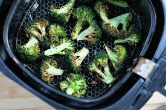

Odin Recipes
Italian handmade with Olive Oil Lasagna

Ingredients
- 1. Break
- 2. Red Chilli
- 3. Oil Oil (4 tea spoon)
- 4. Corn Floor
Preparation method
- Pour 4 tea spoon olive oil into hot pan
- Fry the bread atleast 3 to 4 both sides
- Fry corn floor with breads
- Eat with red chilli
Brocolli with Premium Oil

Ingredients
- Premium oil
- Fresh Broccolli
Preparation method
- Fry Broccolli with Premium oil
- Eat